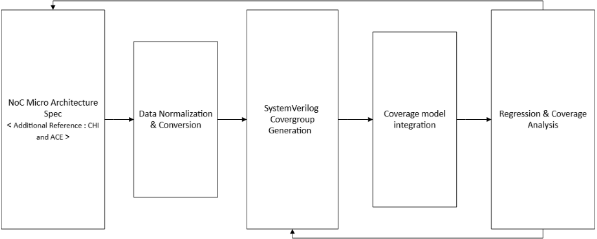
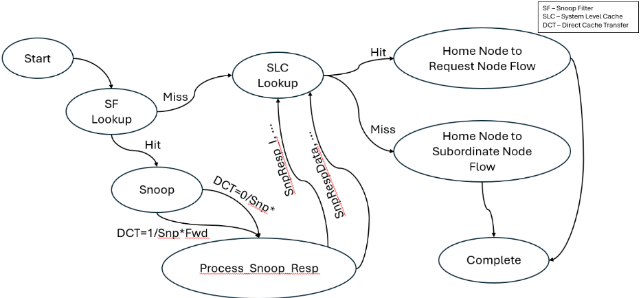
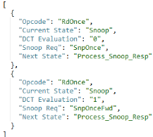
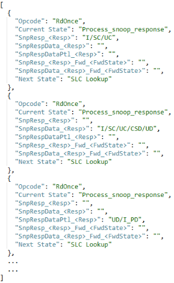
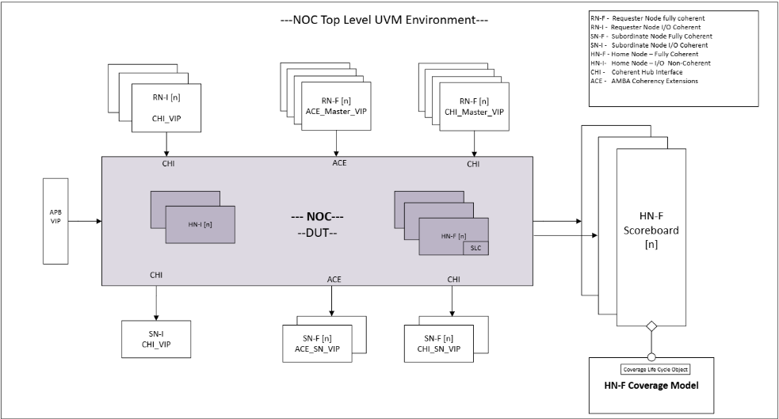
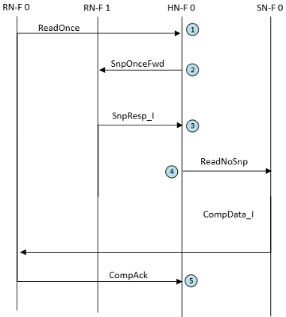
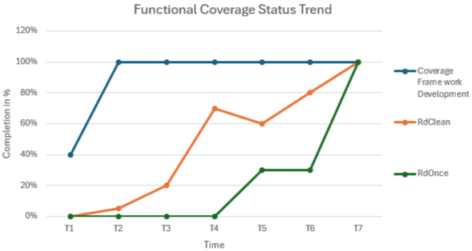

从规格到收敛：面向 Cache Coherent Home Node 的半自动化覆盖率驱动验证方法学
论文针对基于 AMBA CHI 协议的 cache coherent NoC 中 Home Node（HN-F）验证收敛难的问题：opcode 生命周期横跨 Request/Snoop/Response/Data 多通道且乱序执行，MOESI 状态与响应组合爆炸，而第三方 VIP 覆盖率偏重协议合规、无法度量设计特定行为。方法上提出 Coherent Opcode Flow Coverage Architecture：Python 解析器把结构化微架构 spec（FSM 表格）转为 JSON，并自动生成 SystemVerilog covergroup、cross cover 与 illegal bins；同时复用 UVM scoreboard 对完整事务流的可见性，在事务退休时经 TLM analysis port 推送 opcode lifecycle 覆盖率对象，保证采样原子性。该流程从定向测试 bring-up 扩展到每周数百至数千条回归，暴露出 SnpSharedFwd/SnpCleanFwd 等未触达的响应组合，驱动定向激励开发与资源规划，并通过覆盖率趋势异常检测发现 testbench 隐性退化。作者结论是覆盖率由此从后期检查项转变为贯穿项目的主动指标，但论文未给出量化收敛数据。
基于 AMBA CHI 的 cache coherent NoC 中，Home Node 作为一致性权威需处理跨 Request/Snoop/Response/Data 通道、乱序执行、MOESI 状态与 snoop 响应组合爆炸的复杂事务流，验证空间巨大；仅靠定向测试或随机流量无法保证有意义的验证进度，而第三方 VIP 的现成功能覆盖率偏重协议合规、缺乏对设计特定行为（如 Snoop Filter/SLC lookup、微架构状态转移）的度量，导致难以衡量激励质量、发现覆盖缺口并达成验证收敛。
提出三层架构的 Coherent Opcode Flow Coverage Architecture：(1) 规格到覆盖率自动化——将 HN-F 微架构 spec 表达为 FSM 表/图，规范化为 xls/csv 后由 Python 脚本转为 JSON，再自动生成按 opcode 组织的 SystemVerilog covergroup，包含 bins、cross cover 与 illegal bins（后者兼作不支持状态组合的正确性检查器），spec 变更可自动传播到覆盖率模型；(2) 基于 UVM scoreboard 的 opcode 生命周期跟踪——利用 scoreboard 对完整事务流的既有可见性，在流完成（packet 释放）时构造 lifecycle 覆盖率对象并经 TLM analysis port 推送给覆盖率模型，避免传统 per-channel monitor 加事后事务匹配的复杂度与延迟，支持 Many-to-One 与 One-to-One 两种覆盖率模型集成方式；(3) 覆盖率模型解包 lifecycle 对象并按 opcode 调用对应 covergroup 采样，仅在观察到完整合法事务流后触发采样，降低误报并提升覆盖率指标信噪比。
方法从定向测试 bring-up 阶段扩展到每周大规模回归（hundreds to thousands of tests），覆盖率框架在大规模随机回归下保持稳健
发现未被激励触达的 snoop 响应组合：SnpSharedFwd 与 SnpCleanFwd 被发出，但其 SnpRespDataPtl_I_PD 响应组合从未在仿真中观察到
在已覆盖的响应类型内进一步暴露特定 response 与 forward state 组合的覆盖缺口，揭示高测试量与高代码覆盖率下仍未验证的设计路径
覆盖率数据形成反馈闭环，驱动测试作者编写针对性约束/序列/定向测试，并作为测试管理者的资源规划依据
通过周期性覆盖率跟踪发现覆盖率下降但无功能失败的异常，定位到 base test layer/common sequence 变更导致采样未触发的隐性回归
论文未给出量化指标（如最终覆盖率百分比、人力节省比例、收敛时间缩短幅度等具体数字）
区别于依赖第三方 VIP 协议合规覆盖率或纯人工编写 covergroup 的传统做法：(1) 以微架构 spec（FSM 表）为单一数据源，通过 Python→JSON→SystemVerilog covergroup 的半自动链路保证覆盖率模型与设计规格一致，且 spec 变更自动传播，减少人工编码与翻译错误；(2) 以 scoreboard 事务退休时的 lifecycle 对象采样替代 per-channel monitor 加独立匹配逻辑，保证覆盖率采样的原子性与完整性；(3) illegal bins 自动生成使覆盖率模型兼具正确性检查功能；(4) 覆盖率从被动度量转变为驱动激励开发与资源规划的主动反馈闭环。
相关度级别：high
命中能力域：2.4 设计验证方法学 | 2.7 EDA/验证自动化与 AI 辅助
理由：论文核心是 UVM 覆盖率驱动验证方法学与 spec→覆盖率自动化工具链，直接命中 2.4（UVM/SystemVerilog 验证平台、覆盖率驱动验证、回归规划）与 2.7（验证流程自动化、脚本/框架、可复用验证基础设施）；其验证对象为 CHI 一致性 Home Node，与团队高速互连 IP（如 UCIe 等协议类模块）的验证场景高度同构，scoreboard 生命周期采样、覆盖率驱动回归规划与覆盖率异常监控均可直接借鉴到团队的回归与 CI 体系。
建议动作：深入精读并做内部分享
从规格到收敛：一种面向缓存一致性主节点（Home Node）的半自动化覆盖率驱动验证方法学
Kavin Rajendran, Anishmon Soosai, Sumit Dhamanwala, Kranthi Konganti, Shivaprasad Naranapura Chandrashekara Swamy
Openedges，美国奥斯汀
在现代缓存一致性片上网络（Network-on-Chip，NoC）设计中实现验证收敛是一项重大挑战，尤其是随着 AMBA CHI 等协议复杂度的不断攀升。在这类系统中，由请求节点（Requester Node，RN）发起的一致性事务可能引发复杂的流程，涉及跨越请求（Request）、侦听（Snoop）、响应（Response）和数据（Data）通道的多个数据包，且这些流程常常乱序执行。主节点（Home Node，HN）作为一致性权威，必须在遵循 MOESI 协议语义的同时可靠地处理这些交互。这种复杂性造就了极为庞大的验证空间：每个操作码（opcode）的生命周期都涉及状态、通道流程和代理交互的多种潜在排列组合。如果没有一种结构化的方法学来衡量激励对设计的驱动是否充分，就难以确保有意义的验证进展，也难以识别覆盖率缺口。鉴于行业激进的上市时间要求，仅依赖定向测试或随机流量已不再可行，除非辅以健壮的、事务感知的功能覆盖率。功能覆盖率在这一生态系统中发挥着举足轻重的作用：它不仅为设计验证提供量化的信心，还充当指导激励开发的反馈回路。然而，对于基于 CHI 的主节点而言，第三方 VIP 提供的现成覆盖率往往不够充分，因为它们通常侧重于协议符合性，而非设计特定的行为。这就需要一种定制化、可复用且可扩展的解决方案。
本文介绍了一致性操作码流覆盖率架构（Coherent Opcode Flow Coverage Architecture），这是一种分层的半自动化方法论，旨在应对基于 CHI 的主节点设计所面临的独特验证挑战。该架构建立在三大关键支柱之上：
该解决方案的核心是一条自动化工具链，它将 HN-F（Home Node - Fully Coherent，全一致性主节点）设计的结构化微架构规范转换为可执行的覆盖率定义。基于 Python 的解析器对该规范进行处理，生成相关操作码流、通道交互以及 MOESI 状态转换的 JSON 表示。借助可配置的用户输入，该工具能够识别并生成有意义的覆盖点（coverpoint）和交叉覆盖（cross cover），并将其映射到一致性生命周期事件。这种自动化显著减少了手动编码工作量，最大限度地降低了将规范转换为覆盖率模型过程中的人为错误，并使系统对规范变更具有鲁棒性。当操作码行为或允许的流排列发生变化时，只需在规范中进行更新，相应的覆盖率更新便会自动传播。
第二项贡献是一种基于 SystemVerilog 通用验证方法学（UVM）的方法，用于构建并采样完整的操作码流。传统验证平台通常借助每通道监视器（monitor）对各通道（Req/Snp/Rsp/Dat）上的报文进行独立跟踪，随后再由单独的逻辑尝试匹配相应的事务，这既引入了复杂性，也带来了延迟。与之不同，本架构利用了现有的记分板（scoreboard），该记分板本已能够观察到完整的事务流以用于正确性检查。当一个事务准备退休（retire）时，记分板会构建一个覆盖率生命周期对象，其中封装了：
该对象通过事务级建模（TLM）端口被推送至覆盖率模型，从而消除了冗余的跟踪逻辑，并确保了覆盖率采样的原子性。这种紧密耦合而又非侵入的方式，在将仿真开销降至最低的同时，最大限度地保证了准确性与模块化程度。
该架构的最后一个组成部分是功能覆盖率模型，它负责对生命周期对象进行解包与采样。该模型定义了覆盖组（cover group），用于捕获以下内容：
该模型直接使用由 JSON 输入自动生成的覆盖率代码，从而确保与规范定义的事务流保持一致。仅当观察到完整且有效的事务流时才触发采样，从而避免了误报，并提升了覆盖率指标的信噪比。

为了说明如何从微架构规范中提取相关数据，本文将给出一个简化的实现，展示主节点（Home Node，HN-F）如何处理一致性请求，具体而言是一个 ReadOnce 事务。该过程的运作机制将在下文中以有限状态机（FSM）图和状态转换表两种形式详细给出。

将主节点的微架构以 FSM 表或 FSM 图的形式表达，使其便于解析，并能够直接作为自动化流程的输入。
表 1 详细列出了 ReadOnce 请求到达主节点后初始的一组可能转换。当该请求被取出进行处理时，会执行一次侦听过滤器（Snoop Filter）查找。根据查找结果（Hit 或 Miss），下一状态分别转换为 Snoop 或 SLC Lookup。
| Opcode | Current State | Lookup Result | Next State |
|---|---|---|---|
| ReadOnce | SF Lookup | Hit | Snoop |
| Miss | SLC Lookup |
| Opcode | Current State | Lookup Result | Next State |
我们来考虑查找结果为 Hit 的情况，此时 FSM 将转换到 Snoop 状态。在该状态下，主节点会为该请求确定合适的侦听（snoop）类型；对于 ReadOnce 事务，该类型将是 SnpOnce 或 SnpOnceFwd。
| Opcode | Current State | DCT Evaluation | Snoop Req | Next State |
|---|---|---|---|---|
| RdOnce | Snoop | 0 | SnpOnce | Process_Snoop_Resp |
| 1 | SnpOnceFwd | Process_Snoop_Resp |
| Opcode | Current State | DCT Evaluation | Snoop Req | Next State |
侦听请求发出后，FSM 转移到 process_snoop_response 状态以等待响应。由于输入的复杂性，该状态构成了主节点验证的一大挑战：五种可能的侦听响应之一可能经由两个可能的通道（DAT 和 RSP）之一到达。至关重要的是，Resp 和 FwdState 字段——每个字段均可容纳五种不同的状态编码——决定了下一状态，使得决策空间呈指数级增长。
| Opcode | Current State | SnpResp_<Resp> | SnpRespData_<Resp> | SnpRespDataPtl_<Resp> | SnpResp_<Resp>_Fwd_<FwdState> | SnpRespData_<Resp>_Fwd_<FwdState> | Next State |
|---|---|---|---|---|---|---|---|
| RdOnce | Process_snoop_response | I/SC/UC | I/SC/UC/SD/UD | SLC Lookup SLC Lookup | |||
| RdOnce | Process_snoop_response | UD/I_PD | SLC Lookup | ||||
| RdOnce | Process_snoop_response | I,I/SC,I/UC,I/SD,I/UD,I | SLC Lookup | ||||
| RdOnce | Process_snoop_response | I_PD,I/SC_PD,I | SLC Lookup |
| Opcode | Current State | SnpResp_<Resp> | SnpRespData_<Resp> | SnpRespDataPtl_<Resp> | SnpResp_<Resp>_Fwd_<FwdState> | SnpRespData_<Resp>_Fwd_<FwdState> | Next State |
为了使来自微体系结构的 FSM 表格易于处理，会对这些表格进行审查，以确定其中是否存在可能需要删除或改写以使表述更清晰的文本或符号。该步骤确保所有数据输入点均遵循标准化格式，并以脚本可访问的格式（如 xls 或 csv）表示，这对自动化至关重要。该流程是半自动化的，但包含人工检查，以确认生成的 xls 文件准确且完整。这些检查有助于在流程早期发现任何格式问题或缺失字段。
规范化完成后，实现了一个基于 python 的转换脚本，该脚本读取 FSM 表格（.xls）并将其转换为 JSON 格式。选择 JSON 是因为它结构化、易于解析，并且非常适合自动化。此时，输入的 xls 文件已包含诸如操作码（opcode）、响应和交叉组合等重要字段。这些字段被分组并存储在 JSON 中，成为后续步骤的基础。以下是生成的 JSON 结构的示例片段：
L "Opcode": "Readonly", "Current State": "SF Lookup", "Lookup Result": "Hit" "Next State": "Snoop' 11 }, "Opcode": "Readonly", "Current State": "SF Lookup". "Lookup Result": "Miss", "Next State": "SLC Lookup 11 1


这种结构化格式不仅简化了覆盖率生成，还使数据可复用于其他验证任务，例如激励生成和一致性检查。
接下来，利用这些 JSON 数据创建 SystemVerilog 覆盖组（covergroup）。分组可以基于任何相关的设计功能；在本例中，分组基于操作码（opcode）、响应及其交叉组合，并重点关注请求、其侦听（snoop）请求与该请求可能收到的各种侦听响应类型和状态之间的交叉覆盖率。这种自动化方式确保按照设计需求生成所有可能的交叉组合。
为了使覆盖组更易于阅读和维护，还应用了额外的标注与对齐处理。同时还添加了调试钩子（debug hook），以帮助在仿真过程中识别和分析覆盖率缺口。在调试覆盖率点未被命中的复杂场景时，这些钩子能够提供有价值的洞察。
为了监控不受支持的状态组合，针对给定流程中无效的响应状态和转发状态生成了非法仓（illegal bin）。转换脚本将这一生成过程设为可选，从而使覆盖率模型能够兼具双重用途：既作为覆盖率度量，又作为正确性检查器。
covergroup cg_Readonce; option.per_instance = 1; option.goal = 100; cp_SLC_LkUp: coverpoint slc_lkup_status_fcov { bins ValidCom[] = { MISS ,HIT}; } cp_SLC_VAR : coverpoint HA_VAR{ bins HA_VAR = { ABC, DEF};// Picked dummy value for demo } cp_Rdonce_SnpResp_RespState: coverpoint cov_snp_rsp_pkt.Resp { bins ValidCom[] = { I, SC, UC }; illegal_bins illegal[] = { I_PD, SC_PD, SD, SD_PD, UC_PD }; { Cpdds : pdesdsd cp_Rd0nce_SnpRespDataFwd_RespState : coverpoint cov_snp_rsp_data_pkt.Resp { bins RespData_I_PD = {I_PD}; bins RespData_SC_PD = {SC_PD}; illegal_bins ¯illegal[] = {UC_PD,SD_PD}; } cp_Rdonce_SnpRespDataFwd_FwdState : coverpoint cov_snp_rsp_data_pkt.FwdState { bins Fwd_I = {I}; illegal_bins illegal[] = {I_PD,SD_PD,SD,SC_PD,UC}; { cro s tte bins cross_SnpResp_I_PD_SnpRespFwd_I = binsof(cp_Rd0nce_SnpRespDataFwd_RespState.RespData_I_PD) && binsof(cp_RdOnce_SnpRespDataFwd_FwdState.Fwd_I); ( (d d = d i } CP_RDONCE_SNPRESPDATAFWD_RESPSTATE_FWDSATE_HA_0PCODE : cross cp_RdOnce_SnpRespDataFwd_RespState,cp_Rd0nce_SnpRespDataFwd_FwdState,cp_SLC_VAR; <..> endgroup : cg ReadOnce
上面的代码片段展示了 JSON 到 SV 覆盖组转换脚本针对 ReadOnce 操作码及其属性所生成的输出结果。
覆盖组生成完成后，即被集成到片上网络（Network-on-Chip，NoC）验证环境中。记分板（scoreboard）与覆盖模型之间的连接通过 TLM Analysis 端口建立。当记分板释放某个数据包时触发覆盖采样，这意味着给定操作码的流程已经完成，且该数据包中包含了所有相关细节（请求、侦听和响应）。
该方法学支持两种类型的覆盖收集模型：
多对一映射（Many-to-One Mapping）：多个 HNF 记分板汇入单一覆盖模型。
一对一映射（One-to-One Mapping）：每个 HNF 记分板连接到各自的覆盖模型。
执行人工审查，以确保生成的覆盖组与微架构规范相匹配。

所提出的方法学依赖于一种按实例（即主节点，Home Node）划分的记分板架构。在该架构中，记分板跟踪请求进入主节点后的完整生命周期，涵盖操作码（opcode）流程的整个序列：该流程以请求开始，随后是可能出现的侦听（snoop），并最终以相关的响应和数据事务结束。一旦记分板接收到请求包，它就会为相应的事务分配一个唯一的表项，并持续监测预期从被测设计（DUT）输出的事务。当记分板将某个预期事务与实际事务匹配成功后，该事务会被存入缓冲区，直到主节点已接收或发送完所有预期数据包为止。当某个操作码流程完成时——其标志是该请求在主节点处的最后一个预期事务完成匹配——记分板会将该流程的所有相关数据点复制到一个操作码生命周期覆盖对象中，并通过事务级建模（TLM）端口将该覆盖对象写入任意订阅者组件，在本例中即为覆盖模型。随后，记分板会释放其缓冲区中的该特定表项。
如上所述，该过程直接利用了记分板数据，因此其正确性自然取决于记分板本身的正确性。与典型的基于通用验证方法学（UVM）的验证环境一样，DUT 与记分板相互校验对方的正确性，任一组件出现偏差都会导致标记出不匹配（mismatch）错误；但在某些情况下，这两个组件可能同时出现错误，而这种错误可能不会被察觉，从而为覆盖采样提供不正确的数据。为解决这一问题，我们对覆盖收集与采样流程进行了全面且定期的审查，审查结果确认所观测到的覆盖数据与架构要求保持一致。
我们实现了两种类型的覆盖模型集成。第一种方式是多个 HNF 记分板汇入单一覆盖模型，即验证环境（env）中所有 HNF 记分板的覆盖对象都会被发送到一个集中式覆盖模型。第二种方式是将每个 HNF 记分板实例连接到各自的覆盖模型，从而形成一对一连接。然而，这种方式需要更多时间才能达到完整的功能覆盖率，但对于具有不同 HNF 配置的设计，它能够提供按实例粒度的覆盖数据。

在上图所示的时空图中，记分板在点 1 处接收到传入请求后，便开始对下一个预期结果进行建模；当它在点 2 处看到来自被测设备（DUT）的等价事务时，便与预期的侦听请求进行匹配，依此类推。在标记为 1 至 6 的所有点上，记分板持续将相关数据包及任何元数据记录到覆盖对象中。当记分板在点 6 处看到 CompAck——即该流程中最后一个预期事务——时，它便将生命周期覆盖对象写入分析端口，随后由覆盖模型消费。
本文所提出的覆盖模型由两个主要部分组成。第一部分是一套复杂的解包与采样逻辑，用于处理传入的生命周期对象；第二部分是针对每个操作码（opcode）自动生成的覆盖组类，如代码片段 3 所示，该类包含在同一文件中，因此采样逻辑能够访问相应的覆盖组。
生命周期覆盖对象包含某些元数据字段，用于标识该对象来自哪个主节点（HN），还包含其他内部状态字段，例如侦听过滤器（SF）与系统级缓存（SLC）的查找结果，以及其他微架构细节，例如用于处理 CHI 协议中各类流程的操作码。除设计特定字段外，生命周期对象还包含独立的数组，用于保存请求节点（RN）到 HN 的请求包以及 HN 到从节点（SN）的请求包。对于需要多次侦听和响应的流程，相应的侦听包数组和响应包数组会保存所有不同的条目。
采样逻辑负责查看请求包内部的操作码，并确定应调用哪个覆盖组来执行采样过程。在存在多次侦听和响应的情况下，该逻辑会根据需要调用相应的 sample 函数，以捕获所有不同类型的包及其各个数据点。
在实现一致性操作码流覆盖架构（Coherent Opcode Flow Coverage Architecture）之后，采用了分阶段的方法将其集成到更广泛的验证环境中并加以验证。本节兼作整个流程的最后一步（回归与覆盖率分析），概述了该方法论如何从最初的搭建调试演变为驱动激励决策和回归规划的重要工具。
在初始阶段，工作重点是确保覆盖率基础设施，尤其是生命周期采样逻辑能够可靠地运行。为此，使用精心挑选的、有针对性的定向测试列表来执行覆盖率运行，以激励那些已被充分理解的操作码流。这些测试有两个目的：第一，它们可用于对 scoreboard、生命周期对象构建与覆盖率模型之间的早期集成问题进行故障排查和调试。第二，通过将预期的操作码流与实际采样并报告的内容进行对比，它们为所收集的覆盖率数据建立了信任基线。事实证明，这一早期搭建调试阶段对于验证从事务退休到覆盖率采样的端到端数据通路至关重要，从而确保只有完整且合法的事务生命周期才会计入覆盖率度量。
一旦该方法学在受控环境中证明了其正确性与可靠性，它便被扩展到包含大量随机测试列表的更大规模的每周回归运行中。这些回归运行涵盖数百至数千个测试，对操作码行为、侦听（snoop）组合以及系统状态进行了广泛采样。将覆盖率框架集成到这些全规模回归运行中标志着一个重要的里程碑。它不仅在测试规模庞大时依然保持了稳健性，还开始实时凸显出缺口与趋势，提供了原本仅凭日志检查或 VIP 覆盖率难以获得的可见性。
覆盖率框架在部署到回归运行后几乎立即开始产出富有洞察力且可操作的数据。最早期的收益之一是识别出从未观测到的侦听（snoop）响应类型。例如，某些侦听事务（如 SnpSharedFwd 与 SnpCleanFwd）确实被发出了，但其响应组合（SnpRespDataPtl_I_PD）在仿真中从未被观测到。此外，在已被激励过的响应类型内部，该模型暴露出特定响应与前向状态组合上的覆盖率缺失，揭示了此前一直未被测试的设计路径。这些缺口若不加处理，本可能导致尽管测试数量或代码覆盖率很高，逻辑却依然未经验证。能够看清哪些一致性状态、数据来源（前递 vs 存储器）以及代理交互尚未被激励覆盖，这种可见性事实证明对指导激励开发极为宝贵。

覆盖率数据并非处于被动状态；它主动影响了测试内容的开发方式与优先级排序。凭借对缺失内容的清晰度量，测试编写者能够构造有针对性的约束、序列或定向测试，以填补那些特定的缺口。覆盖率分析与测试创建之间的这种反馈回路显著提升了回归效率，并帮助团队将精力集中于“高投资回报率（ROI）”的激励上。此外，这些数据还充当了资源规划工具，帮助测试管理者根据覆盖率缺口所在的位置来分配工作量，而非仅仅依赖直觉或一刀切式的随机化。
随着时间推移，对功能覆盖率数值的周期性跟踪揭示了另一项收益：能够及早发现覆盖率质量中的回退。在某些情况下，尽管测试结果显示并未出现任何功能性失败，覆盖率指标却发生了下降——这促使我们展开更深入的调查。这些异常现象最终揭示出基础测试层或公共序列中存在的底层变更，这些变更在无意中改变了某些流程的行为，致使覆盖率采样无法触发。如果没有专门的覆盖率监控机制，此类问题本会被忽视，并可能在悄然之间侵蚀验证质量。
通过将这些隐藏的回退暴露出来，该框架不仅证明了其在衡量进展方面的价值，也证明了其在长期保持测试平台（testbench）完整性方面的价值。
总体而言，将覆盖率架构集成到回归工作流之中，使覆盖率从后期阶段的检查清单转变为一种主动的、持续的度量指标，并由此塑造了整个项目的验证策略。它带来了更强的可观测性、更快的收敛速度以及对回归周期更明智的利用，而这一切对于大型、可配置的一致性片上网络（NoC）设计实现一次流片成功都至关重要。
参考文献 [1] ARM/CHI Specification : IHI0050G_amba_chi_architecture_spec.pdf [2] A Primer on Memory Consistency and Cache Coherence Second Edition